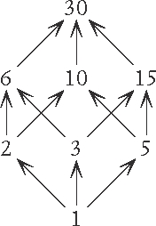
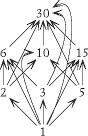
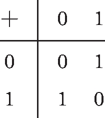
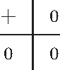
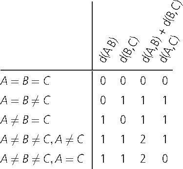
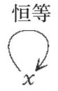
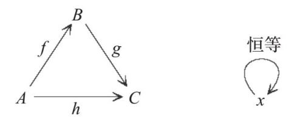

水果奶酥水果奶酥
水果奶酥水果奶酥原料
50克冷的黄油
50克糖（黑砂糖比较好）
75克面粉
350克你喜欢的水果，将所有水果切成小块
方法
1. 将面粉和糖倒入碗中搅拌。
2. 将黄油切成小块，放入上面的碗中，用手指将黄油块和碗中的混合物均匀搅拌，直到混合物变成类似面包糠的样子。
3. 把水果碎平铺在烤盘内，需要的话可以再放一点儿糖。
4. 在水果碎上铺上厚厚一层奶酥预拌粉（步骤2中的混合物）。
5. 将烤箱温度设定为180℃，烤25~30分钟，直到成品呈棕色，看起来很好吃的样子。
奶酥是我最喜欢的布丁种类之一。我喜欢它是因为它做起来很简单，吃起来让人很满足。我很喜欢上层松脆的奶酥和下层柔和的水果碎因稍稍融合在一起而形成的那层口感奇妙的夹层。我最喜欢放在水果奶酥里的水果是蓝莓、李子或者香蕉。当然，你可以用任何你喜欢的水果，虽然西瓜经过烤制后的口感可能会有点儿奇怪。或者，你也可以试试番茄？
此时此刻，你是在想“但番茄是一种蔬菜”，还是在想“搞不好值得一试”？
如果你想的是番茄应该属于蔬菜，你就是在根据番茄在你的日常饮食中扮演的角色来定义它们，而不是根据其内在属性来定义它们。实际上，从植物学的角度来讲，番茄应该属于水果。这是什么意思呢？意思是，根据番茄“在自然界中”所扮演的作为植物生殖系统的一部分这个角色，它们应该被视为水果。但是，如果我们让番茄充当水果奶酥中水果碎的原料，我们的成品可能就会有点儿奇怪。番茄奶酥不是不能做，但它吃起来可能就不像一道甜点了。
这是一个我们在日常生活中以某物在特定情境下所扮演的角色，而不是以它的内在属性来定义它的例子。如果你一直坚持称番茄为水果，或是拒绝称花生为坚果（因为它们其实是一种豆类），那么你就忽略了这些食物所处的情境以及它们与其他食物、与我们自身的关系。
研究事物在特定情境中所扮演的角色是范畴论的专长，因为范畴论一直在强调情境和事物间的关系。我们已经讨论过了，有些事物可以完全根据其与其他事物的关系来定义。比如，数字0是唯一一个加上它之后任何数字都不会发生改变的数字。这是范畴论致力于挖掘的一种很特别的关系，它被称作“泛性质”。
唯一能穿上鞋子的人
当白马王子寻找灰姑娘的时候，他并没有到处询问路人——“呃，不好意思，你是灰姑娘吗？”因为这样一来这个故事就没有那么激动人心了。
相反，像我们熟知的那样，他带着灰姑娘的水晶鞋到处请人试穿。这一做法能够成功的关键在于鞋子很小，所以他知道只有一个人能够穿上它。
白马王子是根据灰姑娘的一些特征，而非她真正的名字来寻找她的，因为他并不知道她的名字。这就像管英国首相叫“首相”而不是“大卫·卡梅伦”一样，你是根据他所扮演的社会角色来称呼他的，而非根据他这个人到底是谁来称呼他的。
范畴论也是这样处理数学的。因为范畴论关注的是事物之间的关系，所以它会根据事物在其与其他事物的关系中所扮演的角色来定义它们。这就好像在玩“猜数字”的游戏。让我们来试试这个：
我在想一个数字。
如果我给这个数字加上1，我就会得到1。
如果我给这个数字加上2，我就会得到2。
事实上，如果我给这个数字加上任意数字x，我就会得到x。
那么，这个数字是多少？
或者这个：
我在想一个数字。
如果我让这个数字乘以1，我就会得到1。
如果我让这个数字乘以2，我就会得到2。
事实上，如果我让这个数字乘以任意数字x，我就会得到x。
那么，这个数字是多少？
你也许已经猜到了，第一个数字是0，第二个数字是1。它们都是很特殊的数字，而且正是根据我刚才所描述的那些特征来定义的。并不存在解释何为数字1的另外一种方法。范畴论的定义是滴水不漏的。
但是，下面这个数字呢：
我在想一个数字。
如果我给这个数字取平方，我就会得到4。
那么，这个数字是多少？
也许你会很快回答道这个数字是2。但你是否意识到这个数字也可以是-2呢？这个问题的难点在于它的正确答案不止一个。当白马王子去找灰姑娘的时候，他所依据的是只有一个人能穿上这只鞋的事实。而在“猜数字”的游戏里，我们依据的是只有一个数字能满足我们的描述这个事实，否则这个游戏就不公平了。范畴论试图界定事物，使得满足这种界定的事物只有一种可能性，这样我们就可以精准确定这个事物所扮演的角色了。
如果你回过头复习一下关于数字的公理的话，你就会发现我们从未说过有且只有一个可能的数字0。这是因为如果存在这条公理的话，它就会被证明是多余的公理，因为我们可以从其他的公理推导出这条公理。
下面是我们证明数字0只能有一个的过程。
我们知道，对于任意数字x，都有：
0+x=x
现在假设有另一个数字和0扮演了同样的角色。因为它试图成为另一个0（zero），所以我们称它为Z。因为它和0遵循同样的规律，所以我们知道，对于任意数字x，都有：
Z+x=x
因为该等式对于任意数字x都成立，所以我们可以让x=0，得到：
Z+0=0
而我们知道给任何数字加上0，这个数字都不会改变，因此等式的左边就等于Z，于是我们得到：
Z=0
换句话说，这个试图充当另一个0的数字也只能是0。
由此，我们就证明了0所对应的数字特征是独一无二的，就像灰姑娘的水晶鞋一样——只有一个数字能满足这个特征描述。我们可以使用任何名字来称呼这个数字（比如0，比如无，等等），这并不重要，重要的是，只要我们知道某个数字满足这个特点，我们就知道我们说的是同一个数字。
对于逆元素来说也是如此。我们知道，3的加法逆元是-3，因为二者加起来等于0。但就这个情境而言，-3其实是唯一满足这个条件的数字。我们可以用如下方法进行证明。
假设存在另外一个数字Y也满足这个条件，因此：
3+Y=0
然后，我们可以在等式的两边同时加上-3（相当于在等式两边同时减去3）。于是，等式的左边就等于Y，右边则等于-3，因此我们得到：
Y=-3
也就是说，如果一个其他的数字Y试图成为3的加法逆元，我们就会发现它只可能是-3。
泛性质研究的一个重要方面是找到一个能独一无二地定义某事物的特点。这里的“泛”并不意味着这个性质对于所有的事物普遍成立。它更像是一把能打开所有锁的万能钥匙，或是一个能解开电脑上所有使用不同密码的加密文件的通用密码。在某种程度上，它是所有其他事物的最高级形式。
泛性质就像最好和最坏，或是最先和最后一样。
关于极端情形
北极和南极是一对令人着迷的概念。亲身前往北极或南极是追求征服高难度挑战的探险者们的一个梦想。关于北极与南极的一个有趣之处就在于我们所生活的地球没有西极或者东极。这是因为地球是以东西向而非南北向自转的。如果地球以南北向自转的话，我们就会有东西极而没有南北极了，所有的地球磁场也会转变为另一个方向。
研究极点的自然特性能帮助我们更好地理解地球，即便世界上大部分地区与南北极点完全不相像（幸好如此）——这就是为什么南极唯一的一处人类居住区就是科考站。
范畴论也试图找到每一个数学世界的“北极和南极”，即便那个数学世界的其他地区并不遵循同样的规律，因为这些极端情形能够启发我们理解这个世界的其他部分。
一旦我们明白了事物之间的关系，我们就可以寻找各种不同的极端情形，例如：最大的是什么？最小的是什么？或者最强的是什么？最弱的是什么？比如：
• 最小的集合是空集，它不包含任何元素。这个数学概念能够更准确地描述我们在日常生活中遇到的类似情形，比如，你目前手里的集邮册是空的，与你没有集邮就是不同的两件事；或者，如果你正在超市中推着一辆空的购物车，那么这与你没有购物车就是不同的概念。
• 那么最大的集合呢？无限集合是一个很有意思的概念，比较不同的无限集合，并发现其中一些比另一些在某种严格的数学意义上“更无限”是一件特别激动人心的事。
以上这些都是关于“泛性质”的例子。它们告诉我们，某些事物对于某些与其相关的系统而言是很特别的。我们并不只是在说某物很大，“大”只是一个性质。我们说的是它是最大的，或是其他某种数学版本的最高级。作为人类，我们总是为那些地球自然环境方面的最高级所吸引——最高的山、最深的海、最长的河、最高的瀑布等。这是一种以极端情形来定义我们所生活的地球的方法，它为地球上其他的自然形态提供了一个参照系。范畴论寻找数学世界中的极端情形，即便这些情形没有那么典型——因为这正是极端情形的特点之所在。
在探讨群这个概念的时候，寻找极端情形是一个很有趣的话题。不存在什么元素也没有的群，因为关于群的公理之一就是群必须包含单位元（与其他元素结合时不会使后者发生改变的元素）。这就像不存在空的意大利饺，因为意大利饺就其定义而言必须是有馅料的。总之，这条公理意味着最小的群是只有一个元素的群，而这个元素就是单位元。当你将它和它自己结合的时候，你会不断得到它自己。这就像是一个只有数字0的数字系统。这听起来很蠢，但接下来我们会看到，即使不是出于实用的原因，而是出于抽象的原因，这个概念也非常重要。
一种不那么显而易见但在数学上更重要的极端情形是一个范畴的“始对象”和“终对象”。我们一旦给某个范畴内的每一种关系都画上一个箭头，我们就可以说，一个始对象就是，对于范畴内的其他所有元素，每个元素都有且仅有一个箭头从它出发，指向这些元素。一个终对象就是，对于范畴内的其他所有元素，每个元素都有且仅有一个箭头指向它。因此，如果我们把箭头想象成是有方向的，那么始对象就类似于“起点”，而终对象就类似于终点。
这两个概念不等同于“最大”和“最小”，就像北极和南极并不意味着最大或最小的地域一样。它也不等同于最好或最坏。还记得那个关于30的因数的格子图吗？

从这张图我们可以看出，最大的数字是30，同时它也是终对象，而最小的数字是1，同时它也是始对象，但需要注意的是，这种重合只是一个偶然。
实际上，从那张包含复合箭头的图中，你更容易看出30是终对象：

对于图中除30之外的任何数字，你都会发现有且仅有一个箭头从它指向30。同样，有且只有一个箭头从1指向图中你所选的任何其他数字，这表明1是始对象。
对于一个包含所有可能的集合及其所有可能的函数的范畴，始对象就是空集（也是最小的集合），而终对象是任何有一个元素的集合——它绝对不是最大的集合。
上述说法成立的原因解释起来比较复杂。首先我们要理解这里所说的“箭头”是什么箭头。这里所说的箭头是函数，函数AB就是将集合A中的每个元素转换为集合B中一个对应元素的一种方式。它并非必须是一个可以写成简洁的方程式（比如x2）的过程；它更像一台神秘的机器，这个机器从A中取出元素作为输入，然后吐出B中的元素作为输出。如果你把这台机器拆解开来，你也许会发现它是依据某个简单的方法运作的，当然也可能并不是这样。但无论如何，这台机器如何运作并不重要，重要的是这台机器输出的是什么。
现在，如果集合B只有一个元素，那么这种机器就有且只有一种，因为只存在一种可能的输出，所以不管你从集合A里取什么元素作为输入，这台机器的输出总是一样的，无论其内部的运行处理过程有多复杂。由此可知，对于这种情况，有且仅有一个箭头从任何其他集合指向集合B，这就使得集合B成为终对象。
如果集合A是一个空集，那么这种机器同样有且仅有一种。这是因为我们没有可用的输入，因此机器什么都做不了。这个过程还没开始就结束了。
就像我之前提到的，对于泛性质的讨论常常会带来危机系统的极端情况。
通过迁移到别处而成为极端情形
如果你想成为某个池塘里最大的那条鱼，你可能需要搬到一个更小的池塘，在那里，比你更大的鱼住不下。如果你想根据事物的特性而非它们自己的名字来定义它们的话，你最好先确定满足这种特性的事物只有一个。比如，安排和某人在“伦敦的英国国家美术馆的咖啡馆”见面，这就是不可能的，因为这样的咖啡馆太多了，而安排和某人在“谢菲尔德的千禧画廊的咖啡馆”见面则是可行的，因为符合描述的咖啡馆只有一家。我和我的朋友就曾经给芝加哥的一间酒吧起名叫“火烈鸟”，实际上它真正的名字是路易酒吧，但问题是路易酒吧是一个连锁店，有很多家分店，但只有其中一家店所在的建筑叫作火烈鸟，而且这栋建筑里只有这一间酒吧。
我最喜欢的威士忌是阿德贝哥乌干达（Ardbeg Uigeadail），有很长一段时间，我都把它叫作“阿德贝哥念不出”，因为我真的不知道怎么发第二个单词的音。但我发现，如果我在威士忌酒吧向酒保要“念不出来的阿德贝哥”，他们总能知道我说的是哪种酒。可惜，阿德贝哥系列最近又出品了其他念不出名字的威士忌，比如阿德贝哥Airigh Nam beist，因此，继续用念不出来这个特性来定义阿德贝哥乌干达似乎不再那么好用了。
范畴论中也会出现类似的情形。如果你想定义的事物，有其他事物具备与之同样的特性，那么你要么把它搬去一个更小的池塘，要么想办法更精确地描述你所指的特性。一个我们会在日常生活中遇到的类似情形是，由于有太多事物都能满足某种“最高级”式的描述，于是我们不得不为这种描述加上好几个限定词。比如，“谢菲尔德的三道菜套餐在15英镑以下的最佳餐厅”，这家餐厅不是任何地方的三道菜套餐在15英镑以下的最佳餐厅，也不是谢菲尔德的任意价位水平的最佳餐厅。我们既细化了对事物性质的描述，也限定了我们讨论问题的情境。
谢菲尔德是拥有“英格兰最大的没有专业管弦乐团的城市”这一特性的城市。对于这一特性的描述，首先需要注意的是，它必须被限制在英格兰而非英国，因为格拉斯哥（位于苏格兰）也没有专业管弦乐团。其次，谢菲尔德有交响乐团，而且它自诩为“南约克郡最好的业余交响乐团”。这种说法让我觉得很有趣，我和我的朋友们在开玩笑时会说我是“南约克郡最棒的年轻女性范畴论学者”。其实我完全可以去掉“最棒”和“年轻”，因为就目前为止，我仍然是南约克郡唯一的女性范畴论学者，除非还有一些女性同行身处唐卡斯特或南约克郡的其他地方而不为人所知。
在上一章，我们探讨了关于相同这个概念的各种问题。有时候我们需要知道哪些事物在某个特定情境下是相同的，而另一些时候我们会从希望哪些事物是相同的这一假设出发，然后去寻找使它们相同的情境。对于与泛性质相关的问题，我们也会用相同的方式进行研究。有时，我们会寻找在某个特定情境下具有泛性质的事物，而另一些时候，我们会先从某个特殊的事物出发，这个事物看起来理应在某种情境下具有泛性质，然后我们就到处寻找使得该事物具有泛性质的情境，就像寻找一个更小的池塘使得我们的鱼能成为其中最大的一条一样。
接下来我们会看到这种研究方式应用于某些数字体系的示例，比如应用于自然数和整数。自然数的存在让我们感觉如此“自然”，以至我们认为它们一定应该在某种情境下具有泛性质。整数也是如此。实际上，数学家在这种比较模糊的、直觉性的情境和一些非常精准的、正式的情境中混淆使用了“自然”这个词。如果某个事物的出现对于范畴论学者来说是非常自然而然的，那么它看起来就带有一种本质性的、非强迫性的特征，并且它看起来应该在某种情境下具有泛性质。12个小时的钟的算数看起来没有那么自然，因为我们需要先设定好钟面上时针走一圈是多少个小时，所以它并不具有真正的泛性质。而只包含0的数字系统虽然看起来很蠢，但它仍然是一个具有本质性的系统，因为我们并不需要进行任何人为的筛选或设定才能使它产生。同理，整数也并不需要我们做任何额外的事情就能自然产生。但整数既不是数字系统这个范畴的始对象，也不是终对象，因为只包含数字0的集合才是数字系统的始对象和终对象。所以为了达成我们的目的，我们必须找到另外一个情境，在那里，整数具有泛性质。我们很快会讲到这种情境具体而言是一个怎样的数字体系。
下面我们来具体阐释为什么最小的群既是始对象又是终对象。这个解释多少有些复杂，而且它需要我们理解群之间的关系是一个怎样的相对概念。如果用箭头表示群之间的关系，那么箭头A→B就是一种把群A中的每个元素对应到群B中的每个元素的方式（就像函数一样）。与此同时，根据关于群的公理，一旦完成了这个对应过程，那么对于群A中的元素成立的加法运算就必须相应地对群B中的元素成立。即如果群A中的元素a1对应于群B中的b1，a2对应于b2，那么a1+a2必须对应于b2+b2。
此定义带来的一个结果是群A的单位元必须对应于群B的单位元。由此，如果群A只有单位元这一个元素，对于把它对应到哪里你就别无选择了——你只能把它与群B的单位元对应。此时，无论群B为何，从群A到群B有且仅有一个箭头，这也就意味着群A是始对象。
而与此同时，从群B到群A同样有且仅有一个箭头（群A只有单位元这一个元素）。因为你对于把群B中的所有元素对应到哪里同样别无选择，就像那个只有一个元素的集合的例子一样。这就意味着群A既是终对象也是始对象，这有点儿像生活在一个北极和南极是同一个点的世界里。
当最高级成为一种负担
有时，最大的并不一定总是最好的。拥有一座大花园也许听起来很不错，但为了照料它，你需要做很多工作；当然，如果你有足够的钱雇用一个园丁团队的话，大就不是问题了。购买一辆空间更大的车子也许听起来很吸引人，但它往往会更笨拙，更难开——除非你身在美国，在那里，其他所有人的车都很大，因此那里的路更宽，停车场更大。类似地，身高很高的人也许很适合打篮球或者换灯泡很容易，但把他们硬塞进飞机狭小的座位就不怎么愉快了。
对于数学里的很多事物来说，我们都需要在“最大”和“最实用”中进行权衡。理论上来说，“最大”的显然是好的——对它们的研究能在很大程度上启发我们的后续工作，同时这类事物本身也能充当其他事物的参照系。不过，参照系一经确立，我们的目标就转移至找到对于日常的数学研究更“实用”的事物上。
比如，一圈有12个小时的钟这个情境并不具有泛性质，因为我们设定了一条人为的规则，就是每当数字累计至12的时候，我们就要回到原点。然而，从实用性角度来讲，这个数字系统太有用了。想象一下，如果我们从来没有为时钟增加一条回到零点的规则会怎样？我们不得不在所有需要涉及具体时间的情境中给出类似于“两千九百六十二万七千四百七十三点半见”这样的描述。这实际上就是用自然数而非12个小时的钟这个数字系统来表示时间的版本。自然数具有泛性质，但12个小时的钟更实用。具有泛性质的事物更适于抽象思考。毕竟，我们在日常生活中并不真的需要所有的自然数，我们只需要知道总的来说我们不会在某一天用光自然数就好了。
不过，我们仍然需要知道自然数所具备的这个泛性质到底是什么，它总结了新的自然数可以永恒地通过数数自然而然地产生这个事实。我们马上就来揭示它的本来面目。
极简主义帮助我们看清楚什么是什么
显然，保罗·埃尔德什生活中的所有事情都是为他的数学研究服务的，他没有与此目的无关的东西，也不做与此目的无关的事情。他几乎没什么财产，而且他很少会在同一个地方待上比较长的时间。他会带着他的手提箱四处游荡，跟不同地方的不同的人探讨数学问题。他总是带着手提箱突然在某处出现，跟其他人花上几天或几周的时间讨论数学问题，然后又前往下一个他想讨论数学问题的地方。
范畴论常常试图通过事物扮演的角色来定义它们，但这个过程也可以反过来：范畴论会先想出一个角色，然后去寻找以最省力的方式满足这个角色的限定条件且不含无关要素的事物。这样一来，不仅这个角色定义了这个事物，这个事物也定义了这个角色。这就像只有丹尼尔·雷德克里夫扮演过哈利·波特这个角色，并且在一段时间之内，丹尼尔·雷德克里夫只扮演哈利·波特这个角色。直到他在《恋马狂》里出演其他角色之前，哈利·波特就是丹尼尔·雷德克里夫，并且丹尼尔·雷德克里夫就是哈利·波特。与之形成对比的是，很多演员扮演过詹姆斯·邦德，而人们很喜欢争论到底哪一个邦德才是最“权威”的詹姆斯·邦德。
有很多作曲家只写过一首小提琴协奏曲，比如柴可夫斯基、门德尔松、勃拉姆斯、贝多芬、西贝柳斯和布鲁赫。因此，我们可以没有歧义地用“柴可夫斯基的小提琴协奏曲”（或是上述其他这些人的小提琴协奏曲）来指代某一首曲子，而“莫扎特的小提琴协奏曲”可能包含很多首曲目，“舒伯特的小提琴协奏曲”则根本不存在。
但这些作曲家中的大多数也写过其他有名的作品——布鲁赫除外。很多人认为布鲁赫只写过这一首小提琴协奏曲。这并不是真的，但他写的这首小提琴协奏曲确实是他写过的所有曲目中唯一为人所知的。因此，不仅是他的小提琴协奏曲可以被他的名字定义，他自己也可以被他所写的这首小提琴协奏曲定义。
范畴论学者詹姆斯·多伦将这样的情形比喻为一个胡子太过浓密的人在街上走路，由于他本人看起来似乎完全被他的胡子主宰了，因此他的存在就好像只是为了承载他的胡子。他就是一个“行走的胡子”。
范畴论学者通常称这种极为简单的特征为“自由生存”，就像打破所有的社会常规，只靠最少的资源维持生活基本所需一样。（我的一个朋友曾在16岁的时候离家出走，她带走了她父母的搅拌机——一个维持生活的必需品？）
理解对于某事物来说维持其基本特征所需要的最少的资源是范畴论的一个重要目标。在这个意义上，埃尔德什是一位真正的“自由生存的数学家”，他只依靠最低限度的资源就能维持他的数学生活。无论是从字面意义还是引申意义来说，他都是一位“行走的数学家”，自始至终带着他只装有必需品的手提箱从一地走到另一地。
正是这句话引导我们看到了自然数的泛性质是什么。这个问题的答案与我们的直观感觉有着令人愉悦的相似性，即自然数就是你从1开始不断往上数数所自然得到的结果。
用范畴论的术语来说，这种“自然”被称作“自由”。它的基本含义是，你以某物为起始，自由地将其推进下去，除了你身处的这个情境本身的规则以外，你并不需要额外添加任何规则。
自然数所处的情境就是“幺半群”。这是一个类似于群的事物，所以我们可以以任何顺序将其中的元素相加，但对于幺半群，我们并没有设定每个元素都必须有一个逆元的规则，所以我们不需要担心负数的问题。现在，如果我们从数字1开始，“自由”地创造一个幺半群，我们就知道我们一定可以进行如下运算：
1+1
1+1+1
1+1+1+1
我们知道我们如何给这些数字加上括号并不重要，但我们不能在其上添加任何进一步的规则，因为我们想自由地推进下去。没有规则。这意味着我们永远不会有任何像这样的方程：
1+1=1+1+1+1
或是其他类似的方程。因此我们需要做的一切就是不断地加上1，而我们得到的就是自然数。因此自然数就是从数字1开始的自由幺半群（free monoid）。
如果我们要求所有的元素都有逆元，那么我们就建立了一个群，这样的话以数字1作为起始点，我们最终就会得到所有的整数。我们所做的基本上就是从1开始不断地给数字加上1，然后给出它的负数版本。因此，整数就是从数字1开始的自由群。
在范畴论中，我们也可以创造出从其他对象开始的自由物体，或者从其他的集合开始的自由群。这类情境的自由是一种泛性质，它与“忘记的结构”密切相关，这个概念我们曾在关于结构的那章里探讨过。我们看到，通过“忘记”群的结构，我们得到了集合，而现在我们有了从一个集合开始“自由”地建立一个群的概念。同理，我们也讨论过环的概念，它们就像群一样，但除加法运算外还包含乘法运算。我们已经知道“忘记”环的乘法可以回到单纯的群的概念，因此同样，我们也有从一个群出发“自由”地建立起一个环的概念。忘记事物和自由地建立事物是一对相反的概念，但它们并不是彼此的逆元。它们是范畴论研究中的另外一种特殊并且更加复杂的关系。
1+1=2，是泛性质吗？
有时，当我告诉别人我是数学家的时候，对方会跟我说起关于一加一等于二的玩笑。他们要么告诉我这是他们唯一确定的数学规律，要么说数学就是非黑即白的，因为：“一加一就是等于二，句号。”
当然，我们在本书中已经见过1+1=0的情境了——在一个一圈有2个小时的钟上。现在让我们看看关于这个钟的想法是怎么出现的。
让我们先来将这个问题转变为一个类似的问题：7+7就等于14，不是吗？没错，除非你讨论的是关于一个有12个小时的钟的问题，在那种情况下，7点钟过7小时是2点钟：
7+7=2
但如果我们讨论的不是钟的问题呢？假如你在思考的是一周中有几天的问题。这个问题更适合在汉语语境下来讨论，因为在汉语中，周一的字面含义就是这一周的第一天，周二就是第二天，周三就是第三天，以此类推。（不过别被我骗了：在汉语中，一周的最后一天是周日，而不是周七。）不管怎样，如果今天是周五，也就是这周的第五天，那么三天后，我们就到了周一，也就是这周的第一天：
5+3=1
或者，如果我们想要弹一首乐曲，我们就需要想明白一个小节中的节拍问题。比如，假设某个曲子的节奏是一小节四拍。那么第一小节第三拍之后的两拍就是第二小节的第一拍：
2+3=1
也许你已经想要争辩说：“这不算！”从数学的角度而言，这是一个不错的反应。通常，如果某个事物不符合数学家所构建的世界的规则，数学家就会声称它不算数。但这种不算数一般而言只是暂时的。如果某个事物不符合他们构建的世界的规则，但它本身还算可以说得通，他们就会说，在这个世界里，它不算数，而之后他们就会寻找它真正能够合理存在的世界。
上述所有这些“奇怪的”加法法则在某些意义上都是可以说得通的。它们与我们一般所使用的数字系统很像，最多只能算是另一种形式的数字系统。也就是说，我们可以通过检验验证它们的确符合我们之前探讨过的关于数字的公理，比如加法的顺序不会影响结果，括号可以打开，有一个像0一样的数字，也有像负数一样的数字。
那么数“不”呢？孩子们在学习过程中很快就会发现，“不”可以相互抵消，于是他们迅速学会了为此开些很傻的玩笑，比如用“我不是不饿”来说明他们很饿，或者在说出“我不是不是不是不是不是不是不是不是不是不是不是不饿！”之后开始咯咯大笑，因为他们知道没有人能数出来他们到底是说了偶数个“不”，意思是他们很饿，还是奇数个“不”，意思是他们不饿。
在这种情况下，
不是不饿=饿
或者我们可以说：
1个不+ 1个不=0个不
也就是：1+1=0。
这是一个完全合理的数字系统，而且它是自然地产生的，同时还有不低的实用性。在这个数字系统里，我们只有两个数字——0和1，并且它们是这样相加的：
0+0=0
0+1=1
1+0=1
1+1=0
就像我们之前讨论过的，我们可以画一个小的加法表格，就像这样：

而这个图表就和巴腾堡蛋糕的横切面图案一模一样：

同样的图案也会出现在电路的非门问题，或是有两个位于不同房间的开关的灯——如果你按下其中一个开关，灯就亮了，但如果你按下两个开关，灯就又灭了。
这是一个非常小的数字系统。但它是最小的吗？不是。其实还有一个更小的数字系统，它只有一个数字：0。它的加法表是这样的：

这就像一个不被允许吃任何甜食的世界，确切地说，就像我小时候因为对食用色素过敏而不被允许吃任何甜食的那个世界一样（那时候所有的甜食都有食用色素）。我的甜食世界里唯一存在的数字是0。我们又回到了那个可能存在的最小的群，其中只有一个元素：单位元。如果我们讨论的是加法法则的话，那么单位元是0，因为把它加到任何数字上，那个数字都不会改变。
这个系统本身并不是一个很有用的数字系统，但在范畴论里，我们不只是思考数字系统本身，我们还要思考数字系统之间的关系。
当我小的时候，我会对比自己所处的这个无甜食的世界和我所有朋友们所处的世界。我的朋友们每周五都会得到5便士或10便士的零花钱，于是他们就会去镇上的甜品店用那一大笔钱买一大包甜食。同样，在范畴论里，我们也会对比这个没有其他数字的数字系统和所有其他的数字系统。它就是数字系统这个世界里的南极。它是一个极端的数字系统，在这里，不会有什么事情发生（就像在南极一样），但它仍然是一个重要的、值得我们准确定义的系统，因为它告诉我们这个数字系统世界的极端情形在哪里。
我们之前也讨论过关于距离的概念，我们称其为“度量”。关于度量的极端情形是每样事物彼此之间的距离都为1（除非所有的东西都是同一个）。对于这些抽象的距离，我们不使用单位，因此我们不是在说1公里或1英里，我们只说1什么。这样一来，一个每样事物彼此的距离都为10的度量就并不会比1“更大”，因为我们没有单位，所以“1什么”在抽象意义上和“10什么”是一样的。这类情境的关键在于每样事物都不可避免地与其他所有的事物分开了。这个关于每样事物彼此之间的距离都为1的情境听起来也许有些令人茫然，但我们可以验证它是满足关于距离的三条法则的：
1.如果A和B相等，那么从A到B的距离只能是0（否则的话这个距离就只能为1）。
2.从A到B的距离与从B到A的距离相同（因为要么它们是相同的地点，那样的话距离就为0；要么它们是不同的地点，那样的话距离就为1）。
3.三角不等式——这一条检验起来比较复杂，但它也是成立的。
如果我们把从A到B的距离写成d（A，B），那么我们需要证明的是：
d（A，C）≤ d（A，B）+ d（B，C）
我们可以画一张包含所有不同情况的表格：

我们需要检验的是最后一列总是小于等于倒数第二列。如上表所示，事实的确如此。
另外一种检验这个不等式的方法是反证法。假设存在A、B、C，使三角不等式不成立，也就是说，有：
d（A，C）> d（A，B）+ d（B，C）
我们的目的是“希望最坏的结果出现”，或者说希望某种矛盾出现，这样一来，这个不等式就不可能成立了。
现在，由于所有的距离不是0就是1，因此不等式的左边只能是0或者1，不等式的右边只能是0、1或者2。因此不等式左边比不等式右边大的唯一可能性是左边为1而右边为0。但右边为0的唯一可能性是右边的两段距离都为0，这就意味着A=B=C，也就是说左边也为0。这样一来，不等式的两边就相等了，也就与我们的假设矛盾了。
你觉得这两种证明方式哪一种比较容易理解？哪一种更让人满意？
这种度量叫作“离散度量”，因为它让所有的事物都分散开来。没有哪两样事物离得很近，每样事物之间的距离是一样的。（也许这是一个可以瞬间移动的度量，所有的地点对其而言都一样容易到达？）我知道这个度量看起来实在有些奇怪，但这种观感对于具有泛性质的事物来说并不是偶然——因为它们是事物的极端情况，所以它们要么挤成一团，要么分散得很开。
你也许会好奇有没有一个“可能存在的最小的度量”，其中所有事物彼此之间的距离都为0。答案是肯定的，只不过这意味着其中所有的事物都等同于其他事物。它是又一个挤成一团，而不是分散得很开的系统。
你也许会好奇，在范畴这个系统内部是否也存在类似的极端情形。答案是肯定的。
可能存在的最小的范畴是空的范畴，就像可能存在的最小的集合是空集一样。类似地，就像空集是集合的始对象一样，空的范畴也是范畴这个系统的始对象。这个系统的终对象是只有一个元素和一个箭头的范畴，我们之前曾看到过它：

这个范畴就像是把一个作为终对象的集合与一个作为终对象的群融合在了一起。
之所以如此，是因为范畴之间的关系这个相对概念就是我们之前讨论过的集合的概念和群的概念的融合。要从一个范畴到另一个范畴，我们不只需要把前者的每个元素对应到后者的每个元素，还需要把前者的每个箭头对应到后者的每个箭头，并且在后一个范畴中箭头的复合必须与前一个范畴相对应，就像我们对群进行这种操作时，加法也必须符合这种对应规则一样。因此，如果我们试图从范畴A对应到上面那个小的范畴，那么我们别无选择——A中的每个元素必须对应到上面那个范畴所拥有的唯一元素x，A中的每个箭头必须对应到上面那个范畴的恒等箭头，因此上面那个小范畴就是终对象。
为了更深入地理解范畴这个概念，试着想象一下将下图左边这个三角形所表示的范畴对应到右边这个小的范畴：

我们需要输入A、B、C和f、g、h，而输出的只能是x或恒等态射。当我们输入某个物体时，我们就一定会得到某个物体作为输出。这意味着在此例中，如果我们输入A、B或C，我们必须得到输出x。当我们输入某个态射时，我们也必须得到某种态射作为输出，因此当我们输入f、g或h时，我们就必须得到恒等态射作为输出。因此，从左边的大的范畴到右边这个小的范畴只可能存在一种“态射机器”。无论第一个范畴有多大，这个结论都是成立的。这表明这个小的范畴就是终对象。
我们也有具有泛性质的范畴，就像我们之前讨论的离散度量（其中每样事物与其他所有事物的距离都是1）一样。范畴版本的这种情形是一个“离散范畴”，其中从每样事物到其他事物都没有箭头——所有的事物都是完全无关、彼此独立的。
然而，与度量有所不同的是，我们还有这种范畴的“反”范畴，其中每样事物与其他所有事物都是相关的，同时并不相同。在这种范畴中，从每个事物到其他所有事物有且仅有一个箭头，这叫作“非离散”（indiscrete）范畴或密着范畴。［注意英文单词的拼写——不是indiscreet（吐露秘密）而是indiscrete。］这是一个在数学领域以外很少被用到的词，它的意思是事物并非彼此分开、相互独立，相反，它们完全没有彼此分开。这并不意味着它们都是同一个事物，而是说他们在这个特定情境下是等价的。在关于友谊的那一章里，那个联系非常紧密的朋友圈的图示就是一个非离散范畴的例子。那张图中的“朋友”并不是同一个人，但是他们在某种意义上是等价的，因为他们可能都知道一些关于彼此生活的相同细节——没错，就是那种你一旦告诉了其中一个人某件事，就等于告诉了所有人这件事的朋友圈。
找到范畴论里的一个泛性质不仅意味着你能从中知道关于所探讨的某个数学对象的一些重要特征，而且意味着你可以寻找在其他情境下具有相同泛性质的事物。不仅如此，它还给了你一个对比这些不同情境的有趣视角。它让你有机会做一件数学家通常会非常感兴趣的事——通过寻找共性来同时研究一系列不同的事物。
以下是一些关于不同事物所具有的相同的泛性质导致其在数学上具有可比性的例子。
• 我们可以用看待数字加法的方式看待集合的并集，也即用前面两个集合里的所有元素构造一个新的集合。我们也可以用同样的视角看待数字的最大公因数，以及把两个曲面粘在一起得到新曲面的过程。这些事物都是某种形式的余极限，也就是说，它们具有某种共同的泛性质。
• 我们可以用看待数字乘法的方式看待笛卡儿坐标系（包含一个X轴和一个Y轴），以及找出两个数字中较大的或较小的数的过程，还有我们之前讨论过的通过用一个圆在空中画一圈得到一个甜甜圈形状的过程，以及迭代巴腾堡蛋糕。
• 我们可以以同样的方式看待自然数和整数，但与之相对的是，我们不能以同样的方式看待实数，它们确实是不同的数字系统。
自然数和整数都是自由产生的结构。我们可以从数字1开始，通过不断加1的方式得到所有的自然数。我们也可以从数字1开始，通过不断加1和减1的方式得到所有的整数。但我们没有办法从某个数字开始，通过某种操作得到所有的实数——你注定会漏掉某些实数，即便你是从一个无理数开始的。
范畴论是这样看待这个问题的：自然数组成了一个满足加法公理的幺半群。整数组成了一个满足加法公理的群。实数组成了一个叫作“域”（field）的东西——其中所有非零元素都可以进行加法、减法、乘法和除法运算。问题是关于所有幺半群的范畴和关于所有群的范畴都有具有泛性质的元素，而关于所有域的范畴并没有这样的元素。
泛性质给了我们一个提示，它告诉我们如何进行从一个领域到另一个领域的数学交流。就像英国的首相跟美国的总统多少有些类似一样，我们在不同的数学领域寻找相对应的具有相同泛性质的元素，目的是理解某个数学领域内的元素之间的关系，以及两个领域之间的种种关系。
上面所列出的某些具有相同泛性质的例子可能看起来会比另外一些例子更加明显地相似。范畴论很让人感到满足的一点就是，你可以不断地进行抽象，让越来越多的事物变得“一样”，从而把它们放在一起研究。实际上，在范畴论学者之间就有这么一个关于该话题的笑话，它来自范畴论创立者之一，桑德斯·麦克兰恩所写的那本《给数学家的范畴论》中的一个点评：
所有的概念都是Kan扩展。
Kan扩展是某个具有特定泛性质的事物。麦克兰恩的主张是，不仅每样事物都可以通过某种泛性质来理解，而且每样事物都可以通过同样的泛性质来理解。这相当于一个数学中的大一统观点。虽然这句话多少有些玩笑的意思，但它也阐明了范畴论的核心。